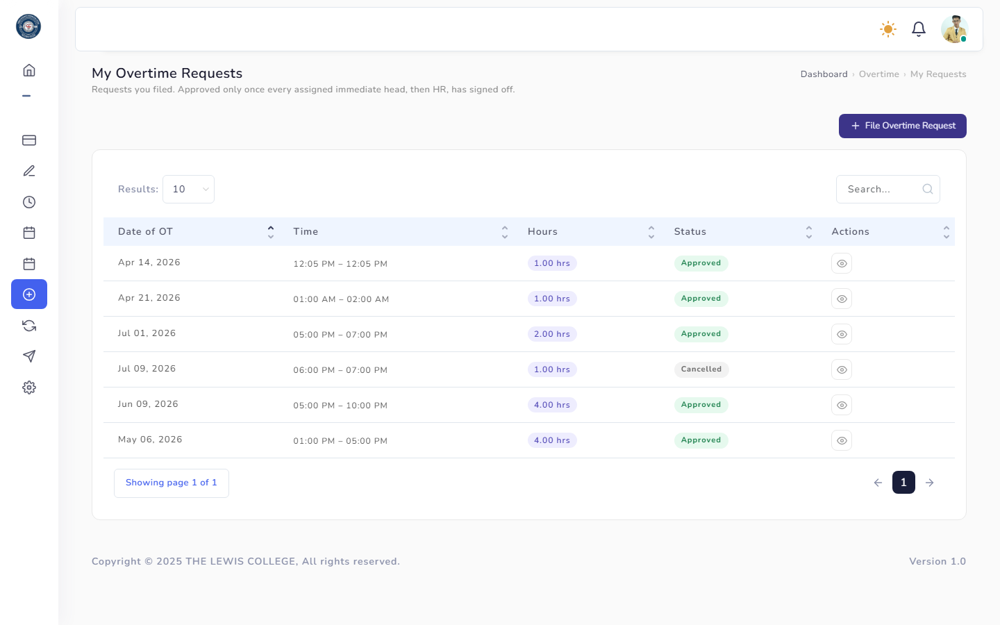
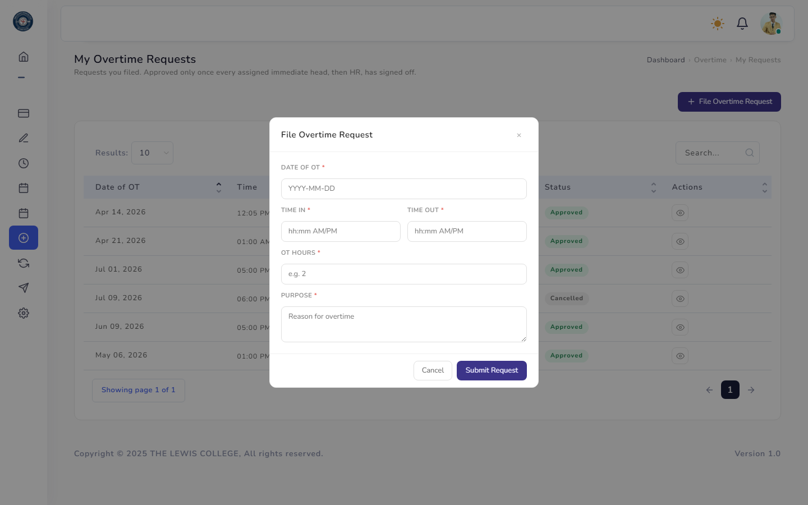
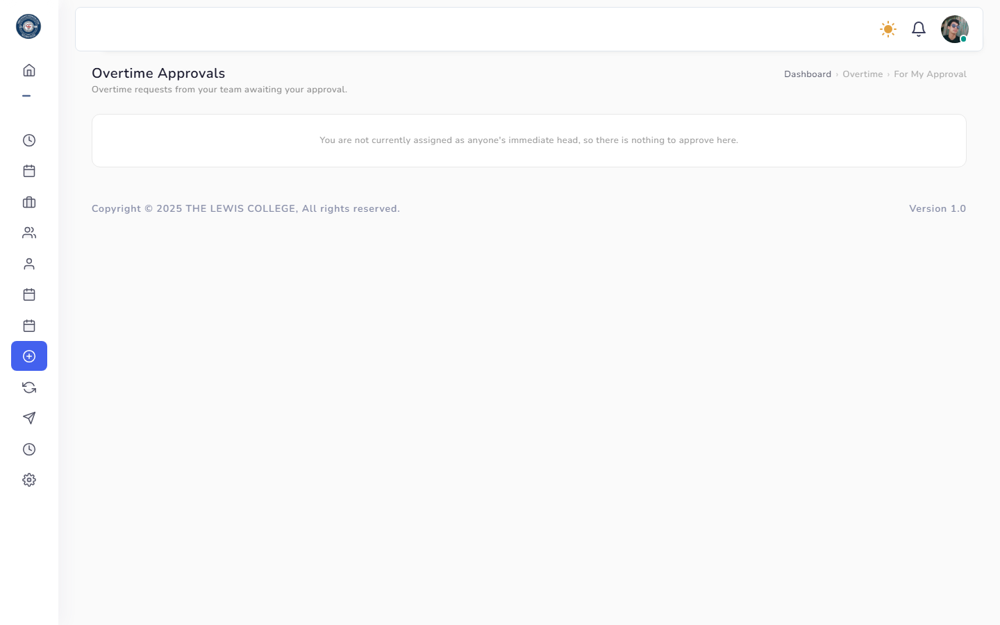
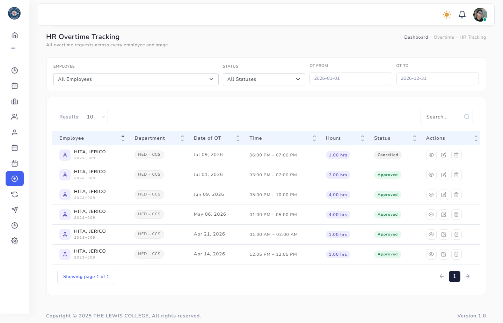
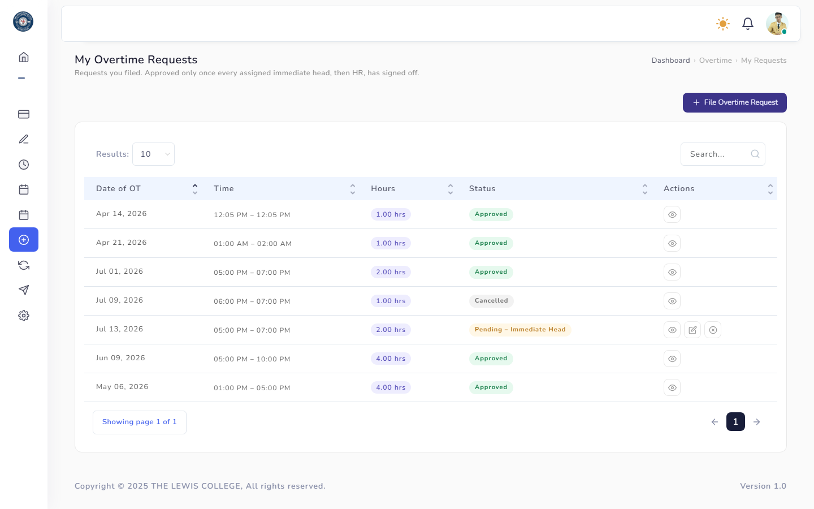
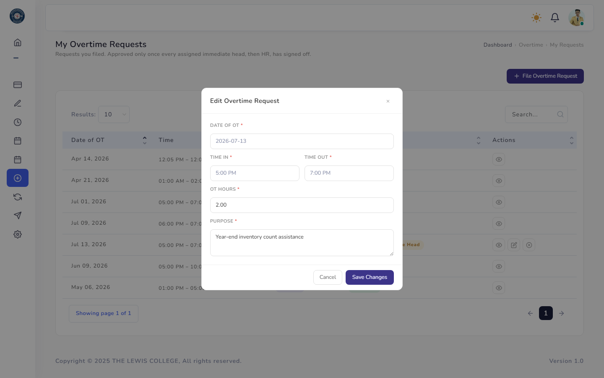

Overtime
Overtime requests follow the same My Requests / Approvals / HR Tracking pattern as leave.

The employee's own filed overtime requests and status.

Date, actual time in/out, requested hours, and purpose.

Immediate head's queue for pending overtime requests.

HR-level visibility into all overtime requests with tracking/override tools.

An Edit (pencil) icon appears next to View and Cancel for a request you can still edit yourself.

Reuses the filing form, pre-filled with your current details, so you can correct a mistake before anyone approves it.
Rules & Validation
- Date of overtime — required, valid date.
- Actual time in / time out — both required.
- Approved/requested hours — required, numeric.
- Purpose — required.
- Rejecting a request (by the head or HR) requires remarks (max 1000 characters) explaining why.
- Requests normally follow a two-step approval chain: Immediate Head → HR. If the employee has no immediate head assigned, the request skips straight to HR.
- If HR assigns that employee a head while the request is still awaiting HR, it is automatically routed back to require that head's approval first. Requests HR has already approved are not affected.
- The employee who filed the request can edit it themselves, but only until it has at least one approval on record — once a head (or HR, for head-less employees) approves, it can no longer be edited, only viewed or cancelled.
Frequently Asked Questions
Common questions about Overtime.
Like leave, overtime requests need sign-off from your Immediate Head first, then HR, before becoming Approved.
You can edit it yourself while it's still Pending and has not yet received any approval — an Edit icon appears next to View and Cancel for eligible requests. Once at least one approval is recorded, editing locks and only cancelling remains available.
Their request skips the head-approval step and goes straight to HR. If HR later assigns them a head while the request is still pending HR review, it will automatically require that head's approval before HR can finalize it.